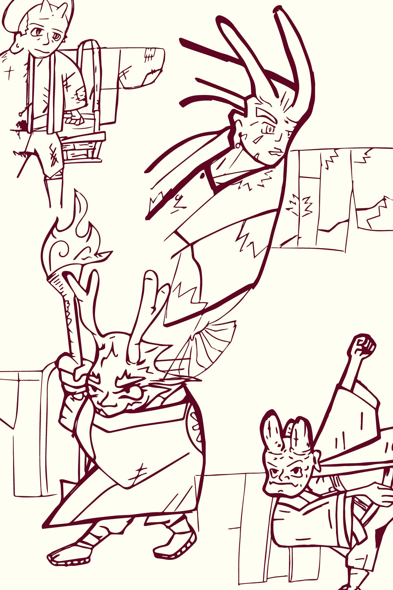

Japanese Jackets
Traditional Garments
There is more to Japanese jackets than just the kimono (KEE-mo-no). In fact, kimono can refer to many different kinds of garments but for the purposes of a starter, we’ll start with just four basic styles to get the ball rolling.